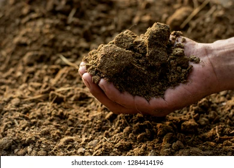
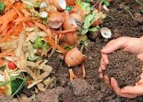
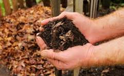
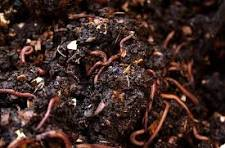

It is most commonly available organic fertilizer in India. Well, rotten cow-dung manure should be used instead of fresh cow-dung. Ideal cow-dung manure is black, moist powdered form.
1. Collection of Cow Dung: Collect fresh cow dung from healthy cows. It's advisable to use cow dung obtained from herbivorous animals as it contains fewer pathogens.
2. Prepare a Compost Bed or Pit: Choose a suitable location to create a compost bed or pit. It could be an enclosed space or a prepared pit in the ground.
3. Mix Cow Dung with Carbon-Rich Material: Combine the cow dung with carbon-rich materials like dry straw, dry leaves, sawdust, or shredded newspaper in a ratio of approximately 1:3 (dung to carbon). The carbon-rich materials balance the nitrogen content in the dung and help aerate the pile.
4. Layering and Turning: Create layers of the dung and carbon mix in the compost bed or pit. Water each layer lightly to maintain moisture. The pile should be moist but not waterlogged. Turn or mix the pile regularly (every few weeks) to provide aeration and aid decomposition.
5. Cover and Monitor: Cover the compost pile with a tarp or similar material to retain moisture and warmth. Monitor the pile regularly for moisture content and temperature. The ideal temperature range for decomposition is 120-160°F (49-71°C).
6. Decomposition and Curing: Allow the cow dung and carbon mix to decompose. The process may take several weeks to several months, depending on environmental conditions and the materials used. Over time, the mixture will break down, and the pile will reduce in size and become darker and crumbly.
7. Test and Use: When the composted cow dung becomes dark brown and earthy-smelling, it is ready to use as manure. Use the matured cow dung manure as an organic fertilizer in your garden or agricultural fields.
Tips: Maintain a balanced mix of cow dung and carbon-rich materials to speed up decomposition. Regularly turning the pile helps aerate it and accelerates the composting process. Protect the composting area from heavy rains, as excessive water can saturate the pile and slow down decomposition. By following these steps, cow dung can be transformed into a nutrient-rich organic fertilizer that helps enhance soil fertility and improves plant growth.
Compost is obtained from the process of home or farm level composting. It’s either done in composter or compost pit. Compost is made from household green waste & farmyard brown waste.
1. Gather Organic Waste: Collect organic materials like fruit and vegetable peels, eggshells, coffee grounds, tea bags, yard clippings, leaves, and small branches. Avoid adding meat, dairy, or oily foods to prevent attracting pests and creating unpleasant odors.
2. Choose a Composting Container: Use a compost bin, a pile, or a dedicated area in your yard for composting. You can purchase composting bins or create a simple one using wire mesh, wood pallets, or repurposed containers.
3. Layering and Balancing: Begin by creating a base layer of yard waste or shredded paper to aid aeration and drainage. Alternate layers of green materials (high in nitrogen, like food scraps) and brown materials (high in carbon, like dry leaves or shredded cardboard). Maintain a balance between green and brown materials for efficient decomposition.
4. Moisture and Aeration: Ensure the compost pile is moist, similar to a wrung-out sponge. Water it if it's too dry or cover it during heavy rains to avoid waterlogging. Regularly turn or aerate the compost with a pitchfork or shovel to provide oxygen, speed up decomposition, and prevent odors.
5. Optimize Conditions: Keep the compost pile covered to retain moisture and warmth, aiding the breakdown of materials. Composting works best in a temperature range of 120-160°F (49-71°C), but it's not mandatory.
6. Monitor and Adjust: Check the moisture content periodically and adjust if necessary. It should feel damp but not soggy. If the compost pile is too dry, add water. If it's too wet, add more dry materials like leaves or shredded paper.
7. Patience and Turning: Allow the organic matter to decompose. Composting usually takes 2 to 6 months or longer, depending on various factors like temperature and materials used. Turn the compost pile regularly to mix the contents, ensuring even decomposition.
8. Ready to Use: When the compost turns dark, crumbly, and earthy-smelling, it's ready to use. Screen out any large or incompletely decomposed materials before using the compost in your garden.
Tips: Chop or shred larger materials to expedite the composting process. Avoid adding materials treated with chemicals or pesticides. Add a handful of finished compost or garden soil to introduce beneficial microorganisms to the compost pile. Bio-composting is a natural process that transforms organic waste into valuable fertilizer for your garden. It not only reduces waste but also enriches soil health and promotes plant growth.
It is a form of compost exclusively made by the fungal & bacterial breakdown of dry leaves. Leaf mould is good quality humus. It is used as rooting medium for stem cutting & pot mixture for orchids & ferns.
1. Leaf Collection: Collect fallen leaves in the autumn/fall season. Choose leaves from a variety of trees, if possible. Avoid leaves treated with pesticides or contaminated by diseased plants.
2. Shredding or Piling: Shred the collected leaves using a leaf shredder or lawn mower. Shredding speeds up the decomposition process. Alternatively, pile the leaves in a designated area or bin.
3. Create a Composting Pile: Make a leaf mold pile in a shaded area away from direct sunlight. Construct a pile approximately 3 to 4 feet in height and width for effective decomposition. If you're using a bin or enclosure, ensure it has proper aeration.
4. Moistening the Leaves: Moisten the leaves slightly. The moisture should be like a damp sponge, not soaking wet. If the leaves are dry, water them while building the pile to maintain adequate moisture.
5. Aeration and Turning: Periodically turn or aerate the pile to enhance decomposition and prevent matting. You can do this using a garden fork or turning the contents of the bin every few weeks.
6. Patience: Allow the leaves to decompose over time. Leaf mold usually takes around 6 months to 2 years to fully decompose, depending on various factors like climate and leaf type.
7. Use as Mulch or Soil Amendment: Once the leaves have turned dark, crumbly, and earthy-smelling, they are ready to use. Apply the leaf mold as a mulch around plants or mix it into the soil to improve its structure and fertility.
Tips: Maintain moisture levels by checking regularly and watering if necessary. Add a source of nitrogen (like grass clippings or a nitrogen-rich fertilizer) to speed up the decomposition process. Turning the pile helps aerate it, speeding up decomposition and preventing odors. Making leaf mold is a natural process that requires time and patience. However, the end result is a fantastic organic material that greatly benefits your garden's soil health and plant growth.
It is manure obtained from the disintegration of organic waste by earthworms. Vermicompost is moist, dark, consistent manure with a slow & steady supply of nutrients.
1. Bin Selection: Choose a suitable container for vermicomposting, such as a plastic or wooden bin. Ensure the bin has adequate drainage and aeration holes.
2. Bedding Preparation: Create a bedding layer using shredded newspaper, cardboard, straw, or coconut coir. Moisten the bedding until it reaches a damp sponge-like consistency.
3. Adding Worms: Acquire red wiggler worms, often available at gardening centers. Place the worms on top of the bedding.
4. Feeding the Worms: Start adding organic kitchen waste like fruit and vegetable scraps, coffee grounds, tea bags (avoid citrus, onions, and meat). Add smaller pieces for faster decomposition.
5. Maintenance: Keep the bedding moist but not waterlogged. Cover the bin with a lid or moistened burlap to maintain moisture and darkness. Regularly check the moisture level and add water if necessary. Turn or mix the compost occasionally to aerate it.
6. Harvesting: After several months, the bedding material will transform into dark, crumbly vermicompost. To harvest, push the finished compost to one side of the bin. Add new bedding and food on the other side. The worms will move to the new side, allowing you to collect the finished vermicompost.
Tips: Avoid adding meat, dairy, oils, or highly acidic foods to prevent odor and attract pests. Maintain a proper balance between food waste and bedding material. Place the bin in a shaded area to prevent extreme temperatures. Avoid overfeeding the worms to prevent unpleasant odors and fruit fly infestations. By following these steps and maintaining the vermicompost bin properly, you can produce nutrient-rich compost for your plants' health and growth.